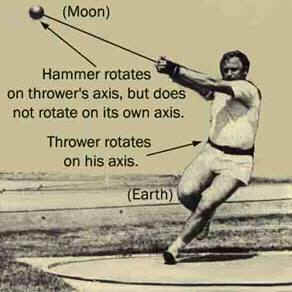
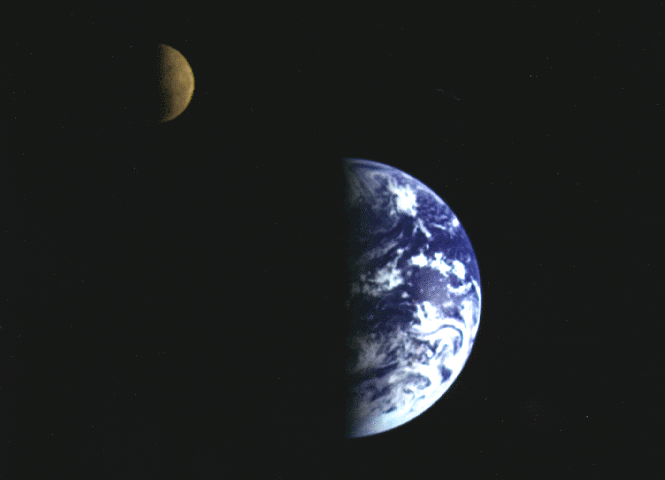

<html>


<!-- Mirrored from www.exitmundi.nl/moon.htm by HTTrack Website Copier/3.x [XR&CO'2014], Mon, 28 Jun 2021 00:53:16 GMT -->
<!-- Added by HTTrack --><meta http-equiv="content-type" content="text/html;charset=UTF-8" /><!-- /Added by HTTrack -->
<head>
<meta http-equiv="Content-Language" content="en-us">
<meta http-equiv="Content-Type" content="text/html; charset=windows-1252">
<meta name="GENERATOR" content="Microsoft FrontPage 4.0">
<meta name="ProgId" content="FrontPage.Editor.Document">
<title>Moonsick: The Moon Is Gone, And We're Going Apeshit!</title>
</head>

<body bgcolor="#000000" text="#FFFFFF" link="#00FFFF" vlink="#FF00FF">

<p class="MsoNormal" align="center"><span lang="EN-US">&nbsp;<font face="Arial" size="3"><br>
<br>
<o:p>
&nbsp;<br>
</o:p>
</font></span></p>
<blockquote>
  <blockquote>
    <p class="MsoNormal" align="center"><span style="mso-fareast-font-family: Times New Roman; mso-ansi-language: EN-US; mso-fareast-language: EN-US; mso-bidi-language: AR-SA" lang="EN-US"><font color="#FF9900" face="MS Sans Serif" size="4">Phew,
    that was close! A colossal asteroid just came by. It narrowly missed the
    Earth -- and smashed up the moon instead. Well, no reason to be cheerful. For
    without the moon, we could be just as doomed.</font></span></p>
  </blockquote>
  <p class="MsoNormal"><font face="MS Sans Serif" size="3"><br>
  </font><font face="MS Sans Serif" size="3"><div align="right">
    <table border="0" width="120" align="right" height="600">
      <tr>
        <td width="100%"><script type="text/javascript"><!--
google_ad_client = "pub-5046374505441754";
google_ad_width = 120;
google_ad_height = 600;
google_ad_format = "120x600_as";
google_ad_type = "text_image";
//2007-01-16: Indexbreed-grijzig, Grafieten hap
google_ad_channel = "9064366162+6276089418";
google_color_border = "CC0000";
google_color_bg = "CCCCCC";
google_color_link = "CC0000";
google_color_text = "333333";
google_color_url = "666666.html";
//--></script>
<script type="text/javascript"
  src="../pagead2.googlesyndication.com/pagead/f.txt">
</script></td>
      </tr>
    </table>
  </div>Just look at that moon. Isn’t it
  lovely? But beware: the moon isn’t just there to entertain us. Without the
  moon, we could be doomed.<br>
  <br>
  There’s always the small but alarming possibility that some dreadful
  cataclysm takes out the moon. Some billions of years ago, this almost
  happened. On one terrible day, a vast comet struck the moon, carving out
  what’s now known as the biggest impact crater of the entire solar system:
  the Aitken Basin, a huge, 2,500 kilometers wide scar on the moon’s South
  Pole.</font>
  <p class="MsoNormal"><font face="MS Sans Serif" size="3">Ok, but what’s the
  big deal?, you ask.</font></p>
  <p class="MsoNormal"><font face="MS Sans Serif" size="3">Well, not too many
  people know this, but the moon is what keeps our planet stable. Without it, we
  would find ourselves on a hostile rollercoaster world. Our planet would
  go berserk.</font></p>
  <p class="MsoNormal"><font face="MS Sans Serif" size="3">For one thing, the
  moon tugs at the oceans. This gives us the tides. No moon, and the floods
  would immediately be about 2,5 times lower -- some minor tidal motion would
  remain, because the Sun pulls at the oceans, too.</font></p>
  <p class="MsoNormal"><font color="#FF9900" face="MS Sans Serif" size="3">T</font><font face="MS Sans Serif" size="3"><font color="#FF9900">he consequences would be dramatic</font>. Many fertile deltas would dry up.
  Other areas would become permanently inundated. There would be all kinds of
  changes to nature. All over the world, people would face droughts, famines,
  diseases and wars.</font></p>
  <p class="MsoNormal"><font face="MS Sans Serif" size="3">And to cheer you up a
  little more: that’s not the worst part.</font></p>
  <p class="MsoNormal">&nbsp;</p>
  <div align="right">
    <table border="0" cellpadding="0" cellspacing="5" width="243" align="right">
      <tr>
        <td width="100%"><font face="MS Sans Serif" size="3"></font></td>
      </tr>
      <tr>
        <td width="100%">
          <p align="center"><font face="MS Sans Serif" size="3"> 
          </font><font color="#FFFF00" face="MS Sans Serif" size="1"><b>Swing
          It Out:</b> The moon and the Earth are locked into a twin system, much
          like an athlete about to hurl a hammer.</font></td>
      </tr>
    </table>
  </div>
  <p class="MsoNormal"><font face="MS Sans Serif" size="3">Crucially, the moon
  also stabilizes the axis around which the Earth rotates. You could compare the
  Earth-moon system to an athlete swinging a hammer around. Take a good look at
  the picture on the right. Now, ask yourself: what would happen if the rope
  suddenly snapped? You get the idea: the athlete would fall over.</font></p>
  <p class="MsoNormal"><font face="MS Sans Serif" size="3">Exactly the same
  thing would happen to the Earth if you took away the moon. Right now, our
  planet rotates at an axis that is tilted about 23 degrees. It has always
  roughly been that way. But without the moon, the Earth’s rotational axis
  would slowly drift off, because of the pull of the other planets -- especially Venus
  and Jupiter. So one moment you’re in Africa; the next, you’re on the North
  Pole!</font></p>
  <p class="MsoNormal"><font face="MS Sans Serif" size="3"><o:p></o:p><font color="#FF9900">In
  the long run, this would
  cause massive, unpredictable and abrupt climate shifts.</font> The Earth would
  heat up, freeze up, and heat up again. One moment, your nose freezes off in a
  massive Ice Age. The next moment, you find yourself sweating your eyeballs
  out, in a period of soaring heat.</font><font face="MS Sans Serif" size="3"><o:p>
  </o:p>
  </font></p>
  <p class="MsoNormal"><font face="MS Sans Serif" size="3">Even worse, our planet could tip over and ‘lie on its back’ for some
  millions of years (or longer). One half of the globe would be in constant
  sunlight, while the other half would be plunged into everlasting darkness --
  and in cold.<br>
  <br>
  We’d have a two-sided planet. And to be honest, you probably don’t want to
  live on either side. The southern half would become a barren, waterless, roasted desert world. The northern half would be an equally barren,
  dry, ultra cold ice world.</font><font face="MS Sans Serif" size="3"><o:p>
  </o:p>
  </font></p>
  <p class="MsoNormal"><font face="MS Sans Serif" size="3"><font color="#FF9900">Ok,
  so you decide to live </font><font color="#FF9900">in between</font> the sunny and the icy side. There, you
  might find a small zone with good old days and nights, and mild temperatures.
  But there’s a downside: the region will be harassed by HUGE, everlasting
  storms. With temperature differences like that, there would be massive flows
  of air between north and south.</font><font face="MS Sans Serif" size="3">&nbsp;<o:p>
  </o:p>
  </font></p>
  <p class="MsoNormal"><font face="MS Sans Serif" size="3">And actually,
  that’s not even the biggest concern. For chances are the
  massive, abrupt climate shifts will at some point kill our world altogether.
  With the moon gone, our world could become a lifeless, dead planet in the end.
  The sweeping climate shifts could at some point disrupt the Earth’s
  atmosphere for good. This
  is probably what happened to Mars (once watery and friendly, but now as dead
  as a doornail). Mars indeed tilts like a drunken athlete: it tips over to
  about 60 degrees!</font><font face="MS Sans Serif" size="3">&nbsp;<o:p>
  </o:p>
  </font></p>
  <p class="MsoNormal"><font face="MS Sans Serif" size="3"><font color="#FF9900">And
  that’s not everything.</font> When the moon gets smashed up or knocked off
  course by a super big asteroid, it’ll probably rain debris on Earth for many
  years. For years, we’d have to wear hard hats<span style="mso-spacerun: yes">&nbsp;
  </span>- only to find that hard hats don’t help against big, incoming chunks
  of moon rock falling down on our world.<br>
  </font></p>
  <p class="MsoNormal"><font face="MS Sans Serif" color="#FFFF00" size="4">Howling
  at the moon</font></p>
  <p class="MsoNormal"><font face="MS Sans Serif" size="3">Still, there’s some
  good news, too.</font></p>
  <p class="MsoNormal"><font face="MS Sans Serif" size="3">According to some
  doom prophets, without the moon, our planet would start spinning wildly, like a whipped top. A day and night on Earth would last only an
  estimated four to eight hours. And we would have HUGE, apocalyptic storms, tens to even hundreds
  of times stronger than anything ever seen on Earth, and each one of them
  lasting many years. Cities and forests would
  be flattened, agriculture would become impossible.</font></p>
  <p class="MsoNormal"><font face="MS Sans Serif" size="3"></font><font face="MS Sans Serif" size="3">But
  fortunately, the doom prophets saying this have got it all wrong.<br>
  <br>
  <font color="#FF9900">The moon has slowed down</font> the rotation of our
  planet for
  good. The moon puts the brakes on our planet, because the tides serve like a
  sort of ‘counter weight’. Over the billions of years, this has slowed down
  the rotation speed of the Earth. But if some rogue black hole suddenly snatched
  away the moon, our planet wouldn’t suddenly start to whirl. It would in fact
  even slow down some more, because of the Sun’s pull.</font></p>
  <p class="MsoNormal"><font face="MS Sans Serif" size="3">Another often heard,
  but wrong, horror scenario is that the moon is about to leave us<span style="mso-spacerun: yes">&nbsp;
  for good</span>.</font></p>
  <p class="MsoNormal"><font face="MS Sans Serif" size="3">Indeed, the moon IS
  leaving us. Very, very slowly, it creeps away from us, inch by inch, year by
  year. The moon flies off at the speed at which fingernails grow: 3,8
  centimeters per year.&nbsp;</font><font face="MS Sans Serif" size="3"><br>
  <br>
  </font><font face="MS Sans Serif" size="3"><font color="#FF9900">But that
  doesn’t mean the moon will be lost in space eventually.</font> Calculations
  show that in about 15 billion years time, the moon’s orbit will stabilize at
  a distance of about 640.000 kilometers. If you looked up from our planet, you would notice
  that the disk of the moon was much smaller than it is now -- only about three
  quarter its present size.</font></p>
  <p class="MsoNormal"><font face="MS Sans Serif" size="3">Not that you would be
  here looking at the moon. Within 5 billion years or so, the Earth will become
  a dead, inhabitable world because the Sun has swallowed us by then -- but
  that’s <a href="Sunburn.html"> another story</a>.</font></p>
  <p class="MsoNormal"><font face="MS Sans Serif" size="3">So all in all, next
  time you see that lovely moon up there, better be grateful. For now, things
  are just right the way they are. No sweeping storms, no ice ages, no falling
  over of the Earth. Let’s hope it’ll stay like that for some time.<br>
  </font></p>
  <p class="MsoNormal"><font face="MS Sans Serif" size="2"><i>(A big celestial
  thanks to dr. Frank Israel (Leiden University) for technical advise)</i></font></p>
<blockquote>
  <p class="MsoNormal" style="text-align:justify;line-height:12.0pt;tab-stops:-72.0pt -36.0pt"><span lang="EN-US" style="letter-spacing:-.15pt"><font face="MS Sans Serif"><o:p></o:p>
  </font></span></p>
  <div align="right">
    <table border="0">
      <tr>
        <td><a href="mailto:mke@xs4all.nl"></a></td>
        <td><a href="intro2.html"></a></td>
      </tr>
    </table>
  </div>
</blockquote>


</blockquote>
<p class="MsoNormal">&nbsp;</p>

<div align="center">
    <center>
    <table border="0" width="728" height="90">
      <tr>
        <td width="100%"><script type="text/javascript"><!--
google_ad_client = "pub-5046374505441754";
google_ad_width = 728;
google_ad_height = 90;
google_ad_format = "728x90_as";
google_ad_type = "text_image";
//2007-01-16: rood grafiet leaderbord
google_ad_channel = "5833008090";
google_color_border = "CC0000";
google_color_bg = "CCCCCC";
google_color_link = "CC0000";
google_color_text = "333333";
google_color_url = "666666.html";
//--></script>
<script type="text/javascript"
  src="../pagead2.googlesyndication.com/pagead/f.txt">
</script>
      </tr>
    </table>
    </center>
  </div>

<p><!-- End Webstats4U code -->
</p>
<p align="center"><font size="2">All texts Copyright © Exit Mundi / AW Bruna
2000-2007.<br>
You're not allowed to copy, edit, publish, print or make public any material
from this website without written permission by Exit Mundi.</font></p>

<!-- Begin Nedstat Basic code -->
<!-- Title: Exit Moondi -->
<!-- URL: http://www.exitmundi.nl/moon.htm -->
<script language="JavaScript" type="text/javascript" src="../m1.nedstatbasic.net/basic.js">
</script>
<script language="JavaScript" type="text/javascript" >
<!--
  nedstatbasic("ADPy4QKawrTej+m8vQZicOQ7HnZA", 0);
// -->
</script>
<noscript><!-- End Nedstat Basic code -->


<!-- Mirrored from www.exitmundi.nl/moon.htm by HTTrack Website Copier/3.x [XR&CO'2014], Mon, 28 Jun 2021 00:53:39 GMT -->
</html>
